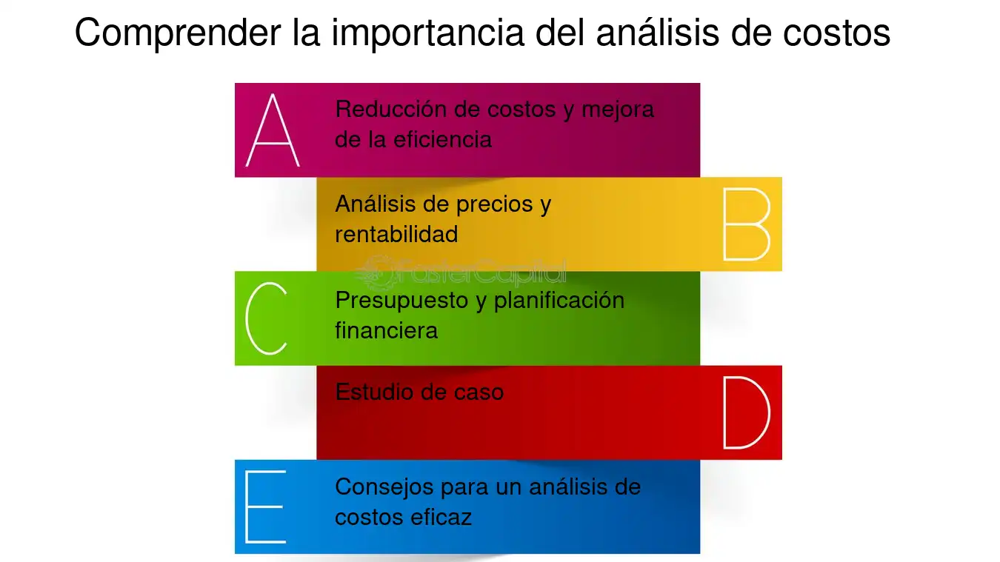

CAPÍTULO 4. LA AGENDA 21
La Agenda 21 es un plan de acción mundial aprobado en 1992 en la Cumbre de la Tierra de Río de Janeiro, con el fin de guiar a los países hacia el desarrollo sustentable. Está organizada en 40 capítulos que incluyen medidas sociales, económicas y ambientales, como la lucha contra la pobreza, el uso responsable de los recursos, la protección de la biodiversidad, la gestión del agua y los suelos, además de la participación de sectores sociales y la educación ambiental. Sus antecedentes se encuentran en la Conferencia de Estocolmo de 1972, que puso en la agenda internacional la relación entre ambiente y desarrollo, y en el Informe Brundtland de 1987, que introdujo el concepto de desarrollo sustentable y sentó las bases para este compromiso global. |
 |
Antecedentes de la Agenda 21
Desde la década de 1970 la comunidad internacional empezó a preocuparse por la degradación ambiental.En 1972 se celebró en Estocolmo la Conferencia de las Naciones Unidas sobre el Medio Humano, que marcó el inicio de la cooperación global en temas ambientales.
En 1987, la Comisión Brundtland publicó el informe Nuestro Futuro Común, donde se definió por primera vez el concepto de desarrollo sustentable (“satisfacer las necesidades del presente sin comprometer las de futuras generaciones”).Estos antecedentes prepararon el terreno para una acción global más concreta en los años noventa.
CAPÍTULO 5. LA DECLARACIÓN DEL MILENIO
Fue adoptada en el año 2000 por la Asamblea General de la ONU como un compromiso global para enfrentar los grandes retos del siglo XXI. Coloca en el centro la paz, los derechos humanos, la equidad social, la reducción de la pobreza y la protección del medio ambiente.
Objetivos de Desarrollo del Milenio (ODM)
De la Declaración surgieron ocho objetivos principales:
- Erradicar la pobreza extrema y el hambre.
- Lograr la educación primaria universal.
- Promover la igualdad de género y empoderar a la mujer.
- Reducir la mortalidad infantil.
- Mejorar la salud materna.
- Combatir el VIH/SIDA, paludismo y otras enfermedades.
- Garantizar la sostenibilidad ambiental.
- Fomentar una alianza mundial para el desarrollo.
Indicadores sobresalientes
Objetivo 1: Erradicar la pobreza extrema y el hambre
Reducir a la mitad la proporción de personas que viven con menos de 1 dólar al día. Lograr empleo pleno y productivo para hombres, mujeres y jóvenes. Reducir la proporción de personas que padecen hambre.
Objetivo 2: Lograr la educación primaria universal
Asegurar que todos los niños y niñas completen la enseñanza primaria. Aumentar la tasa de matrícula escolar en educación básica. Reducir la deserción escolar y mejorar la alfabetización juvenil.
Objetivo 3: Promover la igualdad de género y empoderar a la mujer
Eliminar la desigualdad de género en la educación primaria y secundaria. Medir la participación de la mujer en empleos no agrícolas.Incrementar la representación femenina en parlamentos y espacios de decisión.
CAPÍTULO 6. EL DESARROLLO SUSTENTABLE
Introducción al desarrollo sustentable
El desarrollo sustentable surge como respuesta a la crisis ambiental y social provocada por los modelos de crecimiento económico tradicionales, que priorizan la producción y el consumo sin considerar los límites del planeta. Su propósito es armonizar la economía, la sociedad y el medio ambiente, buscando cubrir las necesidades actuales sin comprometer los recursos de las generaciones futuras.
Desarrollo sustentable o sostenible
| El término fue consolidado en el Informe Brundtland (1987) y adoptado en la Cumbre de Río (1992). 1. Sustentable enfatiza el uso racional de los recursos naturales. 2. Sostenible resalta la capacidad de mantener el bienestar social y económico a lo largo del tiempo. En la práctica, ambos términos se usan como sinónimos, integrando tres dimensiones:
3- Indicadores de sustentabilidad: Se utilizan para medir los avances hacia el desarrollo sustentable. Entre los más representativos están:
Estos indicadores permiten identificar desequilibrios y orientar políticas públicas y estrategias de conservación. 4- Criterios de sustentabilidad Para evaluar si un proceso o política es sustentable se consideran:
|
Tendencias del desarrollo sustentable:
El desarrollo sustentable se concibe como un proceso que busca satisfacer las necesidades sociales y económicas sin rebasar los límites ecológicos del planeta. La tendencia actual es integrar las dimensiones ambiental, social y económica en un mismo marco de acción, privilegiando la corresponsabilidad entre gobiernos, empresas y ciudadanía. Esto implica restaurar y proteger el ambiente, garantizar el crecimiento económico con equidad y orientar las políticas públicas hacia la justicia social y la conservación de los recursos naturales.
CAPÍTULO 7. PARTICIPACIÓN SOCIAL E INSTITUCIONAL EN EL DESARROLLO SUSTENTABLE
La participación de la sociedad es fundamental, ya que sin la colaboración ciudadana resulta imposible llevar a cabo estrategias sustentables. Esto incluye la organización de comunidades, grupos locales y organizaciones no gubernamentales para influir en decisiones públicas, vigilar la aplicación de políticas y proponer alternativas. La participación social también favorece la transparencia, fomenta la corresponsabilidad y permite que las acciones de sustentabilidad tengan arraigo en la vida cotidiana de las personas.
Participación institucional
Las instituciones, tanto gubernamentales como académicas y privadas, cumplen un papel clave en la planificación y ejecución del desarrollo sustentable. A nivel gubernamental, las instituciones diseñan políticas, asignan recursos y establecen marcos legales. Las instituciones académicas generan investigación y formación de capital humano, mientras que las empresas pueden impulsar tecnologías limpias y modelos de producción responsables. Una institucionalidad sólida garantiza continuidad, coordinación y legitimidad en las acciones hacia la sustentabilidad.
CAPÍTULO 8. LA ECONOMÍA Y EL AMBIENTE
Introducción a la economía y el ambiente
La economía y el ambiente están estrechamente relacionados, ya que toda actividad económica depende de los recursos naturales y a la vez genera impactos sobre ellos. Tradicionalmente, la economía se ha enfocado en el crecimiento y en indicadores monetarios, sin considerar los límites ecológicos. Hoy se reconoce que es necesario integrar criterios ambientales en la toma de decisiones económicas para lograr un desarrollo sustentable.
Recursos ambientales comunes
Son aquellos recursos naturales de acceso colectivo, como el aire, el agua, los océanos, los bosques y la biodiversidad. Suelen estar disponibles para todos, pero al no tener un propietario definido, tienden a ser sobreexplotados, generando lo que se conoce como la “tragedia de los comunes”. Su correcta gestión requiere acuerdos sociales, leyes e instrumentos que eviten su agotamiento.
Recursos económicos
La economía distingue tres factores de producción: tierra, trabajo y capital. La “tierra” incluye no solo el suelo, sino todos los recursos naturales. Estos recursos son limitados, y su uso inadecuado afecta tanto la producción económica como la sustentabilidad ambiental. Integrar la valoración ambiental en los recursos económicos permite reflejar mejor los costos reales del desarrollo.
Indicadores económicos
Los indicadores tradicionales como el Producto Interno Bruto (PIB) y el PIB per cápita miden crecimiento económico, pero no reflejan bienestar social ni el deterioro ambiental. Por ello, se han creado indicadores alternativos como:
- Índice de Desarrollo Humano (IDH): combina salud, educación e ingresos.
- Índice de Bienestar Económico Neto (BEN): descuenta del PIB los costos ambientales y sociales.
- Huella ecológica: mide el impacto del consumo en términos de territorio necesario para sostenerlo.
Instrumentos económicos
Son mecanismos que buscan corregir las “fallas del mercado” e internalizar los costos ambientales. Algunos ejemplos son:
- Impuestos ambientales: gravan la contaminación o el uso de recursos.
- Permisos de emisión comercializables: fijan límites de contaminación y permiten comprar/vender derechos de emisión.
- Sistemas de depósito–reembolso: fomentan el reciclaje y la recuperación de materiales.
- Subsidios o incentivos: apoyan prácticas sostenibles y tecnologías limpias.
Análisis costo–beneficio
Es una herramienta económica para evaluar proyectos considerando tanto los costos como los beneficios que generan. En el ámbito ambiental ayuda a decidir si una política o proyecto es conveniente. Sin embargo, tiene limitaciones, ya que es difícil asignar un valor monetario a elementos como la biodiversidad, la calidad del aire, el paisaje o la vida humana. Por ello, se recomienda complementar el análisis económico con criterios sociales y ecológicos. |
 |